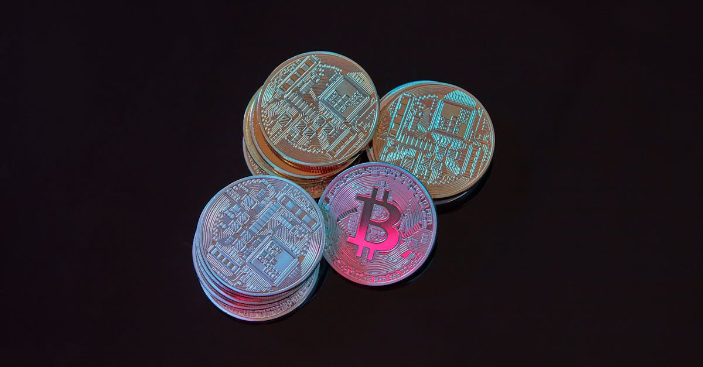

Un Pivot Réglementaire Historique pour le Pakistan
Dans un revirement stratégique majeur, le Pakistan a officiellement levé une interdiction de sept ans qui empêchait les institutions financières de fournir des services liés aux cryptomonnaies. Une lettre envoyée par la banque centrale du pays, la State Bank of Pakistan (SBP), à toutes les banques et aux sociétés de réglementation financière marque un tournant significatif. Cette décision, bien que nuancée, ouvre la porte à une intégration plus poussée des actifs numériques dans le paysage financier pakistanais. Il est crucial de noter que cette autorisation ne s'étend pas à la négociation ou à la détention directe d'actifs cryptographiques par les banques elles-mêmes. L'objectif principal est de permettre aux établissements bancaires de faciliter les services pour les fournisseurs de crypto, tels que les plateformes d'échange ou les portefeuilles numériques, sans s'exposer directement aux risques inhérents à la volatilité des marchés des cryptos. Cette distinction est fondamentale pour comprendre la portée et les limites de cette nouvelle directive. Elle témoigne d'une approche prudente mais résolument tournée vers l'avenir, visant à canaliser l'intérêt croissant pour les technologies blockchain et les crypto-actifs tout en maintenant un cadre de risque contrôlé. L'impact potentiel sur l'innovation locale et l'attraction des investissements étrangers dans le secteur technologique pakistanais pourrait être considérable, positionnant le pays comme un acteur potentiel sur la scène mondiale des fintech et des actifs numériques.
Le contexte de cette décision est marqué par une pression croissante pour moderniser le système financier pakistanais et stimuler la croissance économique. Les crypto-actifs, malgré leurs défis réglementaires, représentent une opportunité de développement pour de nombreux pays. En autorisant les banques à interagir avec les fournisseurs de services crypto, le Pakistan cherche à bénéficier de l'écosystème blockchain sans pour autant assumer les risques directs. Cela pourrait se traduire par une meilleure conformité, une prévention accrue du blanchiment d'argent et du financement du terrorisme, et une plus grande transparence dans les transactions liées aux cryptos. La SBP a clairement indiqué que les banques doivent se conformer aux réglementations existantes en matière de lutte contre le blanchiment d'argent (AML) et de connaissance du client (KYC). Cette approche graduelle permet d'observer l'évolution du marché et d'ajuster la réglementation en conséquence, tout en offrant un cadre clair aux institutions financières désireuses d'explorer ce nouveau domaine. L'adoption de telles mesures est souvent le résultat d'un dialogue approfondi entre les régulateurs, les acteurs du secteur financier et les experts en technologie, reflétant une volonté de trouver un équilibre entre innovation et stabilité.
Les Implications pour les Banques et les Fournisseurs de Services Crypto
La levée de l'interdiction ouvre un nouveau champ d'activités pour les banques pakistanaises. Elles peuvent désormais agir comme intermédiaires, facilitant les transactions entre les clients et les plateformes d'échange de cryptomonnaies. Cela inclut potentiellement la gestion des flux de trésorerie, la fourniture de services de paiement pour les entreprises du secteur crypto, et l'aide à la mise en conformité réglementaire pour ces fournisseurs. Pour les fournisseurs de services crypto opérant au Pakistan, cette décision représente une bouffée d'air frais. Jusqu'à présent, ils évoluaient dans une zone grise, naviguant entre l'incertitude réglementaire et les restrictions bancaires. La possibilité de travailler avec des banques établies leur confère une légitimité accrue et facilite leurs opérations quotidiennes, notamment en ce qui concerne la gestion des dépôts et des retraits en monnaie fiduciaire locale (la roupie pakistanaise). Cela pourrait stimuler la croissance de ces entreprises, encourager la création d'emplois et favoriser l'émergence de nouveaux services innovants dans l'écosystème crypto pakistanais.
Cependant, les banques devront faire preuve d'une diligence raisonnable extrême. La lettre de la SBP souligne la nécessité de respecter scrupuleusement les directives AML/KYC. Cela implique une surveillance accrue des transactions, une identification rigoureuse des clients et une évaluation constante des risques. Les banques qui choisiront d'offrir ces services devront investir dans des technologies et des processus robustes pour garantir la conformité et protéger leurs clients ainsi que leur propre réputation. L'émergence d'outils d'analyse avancée, souvent basés sur l'intelligence artificielle, devient alors cruciale pour détecter les activités suspectes et assurer une conformité efficace à grande échelle. Ces technologies permettent de traiter d'énormes volumes de données transactionnelles et d'identifier des schémas potentiellement frauduleux qui échapperaient à une analyse manuelle. L'intégration de telles solutions pourrait devenir un avantage compétitif pour les banques désireuses de se positionner sur ce marché en pleine évolution.
Du côté des fournisseurs de services crypto, l'accès facilité aux services bancaires traditionnels pourrait entraîner une réduction significative des coûts opérationnels et une amélioration de l'expérience utilisateur. Les délais de transaction pourraient être raccourcis, et la fluidité des mouvements de fonds serait grandement améliorée. Cela pourrait, à terme, attirer une clientèle plus large, y compris des investisseurs institutionnels et des entreprises traditionnelles qui hésitaient auparavant en raison des contraintes bancaires. La capacité des banques à gérer les flux financiers des fournisseurs de crypto est une étape indispensable pour la maturation du marché local des actifs numériques et son intégration dans l'économie formelle. La clarté réglementaire, même partielle, est un catalyseur puissant pour l'innovation et l'investissement dans ce secteur.
Le Contexte Mondial et l'Adoption des Crypto-Actifs
La décision du Pakistan s'inscrit dans une tendance mondiale plus large d'exploration et d'intégration des crypto-actifs et de la technologie blockchain par les institutions financières et les gouvernements. Alors que certains pays ont adopté des approches restrictives, d'autres, comme le Salvador, ont franchi des pas audacieux vers l'adoption des crypto-monnaies comme monnaie légale. Le Pakistan semble adopter une voie intermédiaire, reconnaissant le potentiel de la technologie tout en gérant prudemment les risques. Cette approche pragmatique pourrait servir de modèle pour d'autres nations en développement qui cherchent à tirer parti des innovations financières sans compromettre la stabilité économique.
L'essor des technologies financières décentralisées (DeFi) et des jetons non fongibles (NFT) a également contribué à une prise de conscience mondiale de la valeur et des applications potentielles de la technologie blockchain. Les gouvernements et les régulateurs du monde entier sont désormais confrontés à la nécessité de comprendre et de réglementer cet espace en évolution rapide. L'approche pakistanaise, qui autorise les services de support aux fournisseurs de crypto tout en interdisant la détention directe, pourrait être vue comme une tentative de capitaliser sur l'innovation technologique tout en se protégeant contre la volatilité du marché et les risques de stabilité financière. Cette distinction est essentielle : il s'agit de permettre l'écosystème de services autour des cryptos, sans pour autant s'exposer aux fluctuations intrinsèques des actifs eux-mêmes.
L'influence de l'intelligence artificielle dans ce domaine ne cesse de croître. Les algorithmes d'IA sont de plus en plus utilisés pour analyser les marchés, détecter les fraudes, et même automatiser certaines stratégies de trading. Pour les institutions financières qui se lancent dans les services liés aux crypto-actifs, l'intégration de solutions d'IA peut offrir un avantage compétitif significatif. Cela permet non seulement d'améliorer l'efficacité opérationnelle et la gestion des risques, mais aussi de proposer des services plus sophistiqués aux clients. L'avenir des services financiers, y compris ceux liés aux cryptomonnaies, sera sans aucun doute façonné par la synergie entre la technologie blockchain, la réglementation et l'intelligence artificielle. Le Pakistan, en ouvrant la porte aux banques, crée un terrain fertile pour l'expérimentation et l'adoption de ces technologies avancées.

Les Défis à Venir : Réglementation, Sécurité et Volatilité
Malgré cette avancée positive, plusieurs défis subsistent pour le secteur des crypto-actifs au Pakistan. La réglementation reste un domaine complexe et en évolution. La directive actuelle est un premier pas, mais une réglementation plus complète et détaillée sera nécessaire pour assurer la protection des investisseurs, prévenir les activités illicites et favoriser un environnement d'innovation durable. La clarté sur des aspects tels que la fiscalité des crypto-actifs, la définition juridique des différents types d'actifs numériques et les cadres de résolution des litiges sera cruciale.
La sécurité est une autre préoccupation majeure. Les plateformes d'échange et les portefeuilles numériques sont des cibles privilégiées pour les pirates informatiques. Les banques qui faciliteront les services pour ces entités devront s'assurer que leurs partenaires respectent les normes de sécurité les plus élevées. Cela inclut la mise en place de mesures robustes pour prévenir les piratages, protéger les fonds des clients et garantir la confidentialité des données. L'utilisation de solutions d'authentification multi-facteurs, de systèmes de surveillance en temps réel et de protocoles de chiffrement avancés sera essentielle. L'intelligence artificielle joue ici un rôle clé dans la détection précoce des menaces et la réponse rapide aux incidents de sécurité.
La volatilité inhérente aux marchés des crypto-actifs reste un risque significatif, même si les banques ne détiennent pas directement ces actifs. Les fluctuations importantes de prix peuvent affecter la valeur des transactions facilitées et la confiance des clients. Les banques devront mettre en place des mécanismes de gestion des risques sophistiqués pour atténuer ces effets. Cela pourrait inclure la limitation des volumes de transactions, l'établissement de limites de risque claires et la fourniture d'informations transparentes aux clients sur les risques encourus. La capacité à anticiper les mouvements du marché, même indirectement, est un atout majeur. C'est là que des outils d'analyse prédictive, alimentés par l'IA, peuvent devenir indispensables pour aider les institutions financières à naviguer dans cet environnement complexe et volatile.
L'Impact sur l'Économie Numérique Pakistanaise
La décision du Pakistan de permettre aux banques de fournir des services aux fournisseurs de crypto-actifs pourrait avoir un impact significatif sur l'économie numérique du pays. Elle ouvre la voie à une plus grande inclusion financière, permettant à davantage de citoyens d'accéder aux services financiers numériques et de participer à l'économie mondiale. Pour les jeunes entrepreneurs et les startups technologiques du Pakistan, cela représente une opportunité de développer des solutions innovantes basées sur la blockchain et les crypto-actifs, potentiellement en attirant des investissements locaux et étrangers.
L'intégration progressive des services financiers numériques pourrait également stimuler le commerce électronique et les transferts de fonds internationaux. Les clients utilisant des plateformes de crypto pourraient bénéficier de frais de transaction plus bas et de délais de règlement plus rapides par rapport aux méthodes traditionnelles. Cela pourrait être particulièrement bénéfique pour la diaspora pakistanaise, qui envoie régulièrement des fonds dans le pays. Une facilitation accrue des flux financiers pourrait donc avoir un impact positif direct sur les envois de fonds, une source de revenus importante pour le Pakistan.
De plus, cette ouverture réglementaire pourrait encourager la formation de talents locaux dans le domaine de la technologie blockchain et de la finance numérique. En créant un environnement plus favorable à l'innovation, le Pakistan peut espérer retenir et attirer des professionnels qualifiés, contribuant ainsi à la croissance d'un écosystème technologique robuste. La demande croissante pour des solutions d'analyse de données et de trading automatisé, souvent propulsées par l'IA, créera de nouvelles opportunités d'emploi et de développement de compétences spécialisées. Les plateformes de trading de cryptomonnaies, par exemple, s'appuient de plus en plus sur des algorithmes sophistiqués pour exécuter des transactions rapides et efficaces, un domaine où l'IA excelle.

L'Intelligence Artificielle au Service du Trading Crypto : Une Perspective d'Avenir
Dans ce paysage financier en mutation rapide, l'intelligence artificielle (IA) émerge comme un outil révolutionnaire, particulièrement dans le domaine du trading de crypto-monnaies. Alors que le Pakistan ouvre la voie aux banques pour interagir avec l'écosystème crypto, l'adoption de technologies d'IA pour le trading devient une considération stratégique majeure. Les agents IA, conçus pour analyser d'énormes quantités de données de marché en temps réel, identifier des tendances subtiles et exécuter des transactions à une vitesse surhumaine, offrent un potentiel sans précédent pour optimiser les stratégies d'investissement.
Ces agents IA peuvent fonctionner 24h/24 et 7j/7, une caractéristique particulièrement pertinente pour le marché des crypto-monnaies qui ne ferme jamais. Ils sont capables de traiter des informations provenant de multiples sources – actualités, analyses techniques, sentiment des réseaux sociaux, données on-chain – et d'en déduire des décisions de trading éclairées. Contrairement aux traders humains, les agents IA ne sont pas sujets à la fatigue, aux émotions ou aux biais cognitifs, ce qui garantit une exécution cohérente et disciplinée des stratégies prédéfinies. Pour les institutions financières pakistanaises qui commencent à explorer ce domaine, l'intégration d'agents IA pourrait représenter un avantage concurrentiel décisif, leur permettant de naviguer dans la complexité et la volatilité du marché avec une efficacité accrue.
L'émergence de solutions comme celles proposées par CryptoMind AI, qui développent des agents IA spécifiquement conçus pour le trading de crypto-monnaies, illustre cette tendance. Ces systèmes visent à démocratiser l'accès à des stratégies de trading avancées, rendant potentiellement le trading algorithmique accessible à un public plus large. Alors que le cadre réglementaire au Pakistan continue de s'adapter, l'intérêt pour des outils permettant une gestion des risques plus sophistiquée et une optimisation des rendements ne fera que croître. L'IA n'est plus une simple technologie d'avenir ; elle est une composante essentielle de la stratégie financière moderne, et son rôle dans le trading de crypto-monnaies est appelé à devenir encore plus prépondérant.
Conclusion : Vers une Nouvelle Ère pour la Finance au Pakistan
La décision du Pakistan de lever l'interdiction pesant sur les services bancaires liés aux crypto-actifs est une étape audacieuse et prometteuse. Elle témoigne d'une volonté d'embrasser l'innovation financière tout en naviguant avec prudence dans les complexités réglementaires. En autorisant les banques à servir les fournisseurs de crypto, le pays se positionne pour bénéficier des avancées technologiques de la blockchain et des actifs numériques, sans s'exposer directement aux risques les plus élevés. Cette approche mesurée pourrait stimuler l'économie numérique pakistanaise, favoriser l'inclusion financière et attirer de nouveaux investissements.
Les banques pakistanaises se trouvent à l'aube d'une nouvelle ère, avec la possibilité d'élargir leur offre de services et de mieux répondre aux besoins d'une clientèle de plus en plus intéressée par les actifs numériques. Cependant, le succès de cette initiative dépendra de leur capacité à mettre en œuvre des mesures de sécurité et de conformité rigoureuses, en particulier en matière de lutte contre le blanchiment d'argent et de connaissance du client. L'adoption de technologies avancées, y compris l'intelligence artificielle pour l'analyse des risques et l'optimisation des opérations, sera probablement un facteur clé de différenciation.
Alors que le monde continue d'explorer le potentiel des crypto-monnaies et de la technologie blockchain, le Pakistan a pris une décision stratégique qui pourrait avoir des répercussions positives à long terme. L'évolution future de la réglementation et l'adoption par les institutions financières détermineront pleinement l'impact de ce changement, mais la direction prise est indéniablement celle de l'intégration et de l'innovation dans le secteur financier.